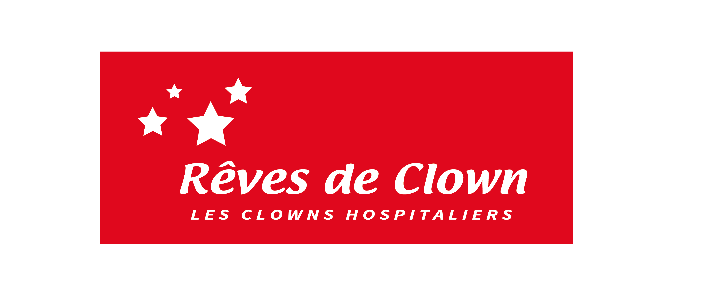

Un événement responsable pour préserver la Côte d'Émeraude
Le Semi-Marathon Cancale Saint-Malo traverse des paysages d'une beauté exceptionnelle. Nous avons la responsabilité collective de les préserver pour les générations futures.
L'organisation s'engage à réduire l'impact environnemental de l'événement et à sensibiliser les 7 000 coureurs et le public à ces enjeux.
Cancale, Saint-Coulomb et Saint-Malo nous accueillent chaque année. Nous travaillons main dans la main avec les municipalités pour limiter les perturbations.
Plus de 300 bénévoles rendent cet événement possible. Leur engagement est précieux — un sourire et un merci font toute la différence sur le parcours.
Pour limiter l'impact de l'événement sur les routes et le stationnement, des navettes gratuites sont mises en place le matin de la course depuis Saint-Malo jusqu'au départ de Cancale.

Créée en 1998 à Lorient, Rêves De Clown est une association unique en Bretagne. Ses clowns hospitaliers — des professionnels formés au milieu médical — interviennent chambre après chambre dans 19 établissements de soins de l'Ouest de la France.
Pédiatrie, réanimation, oncologie, soins palliatifs, EHPAD… Ils accompagnent même les enfants jusqu'au bloc opératoire. Leur mission : dédramatiser les soins, apaiser les angoisses et offrir un moment de légèreté à celles et ceux qui en ont le plus besoin.
💛 Soutenez Rêves De Clown lors de votre inscription
Lors de votre inscription sur NextRun, vous pouvez ajouter un don directement à votre commande :
Chaque euro contribue directement à financer les interventions et à offrir un sourire à ceux qui en ont besoin.
Vous partagez nos valeurs et souhaitez contribuer activement à l'organisation de cet événement emblématique ? Rejoignez notre équipe de bénévoles !